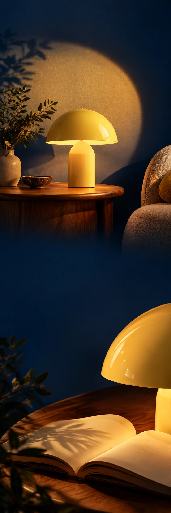

LUMEN FORMS
Design & interieurObjectintroductie
LIGHT THAT SETS THE MOOD
A softer
side of evening.
Niet meer licht. Meer gevoel.
Een ronde kap en een rustige, sculpturale voet. Lumen Forms onderzoekt wat er gebeurt als een lichtbron ook een object wordt om naar te kijken.
Ontdek de lampMake room
for evening.
Niet meer licht. Meer gevoel.
Ontdek de lamp